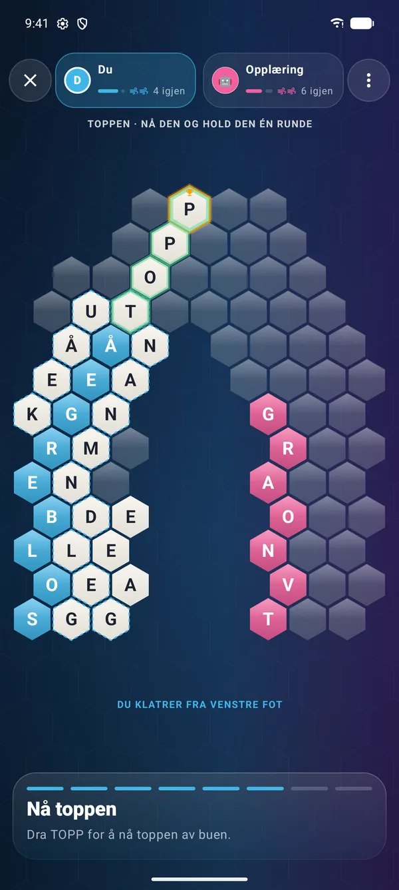
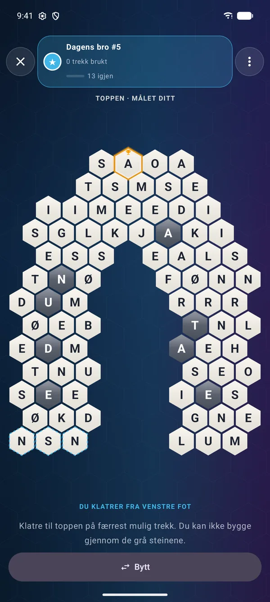
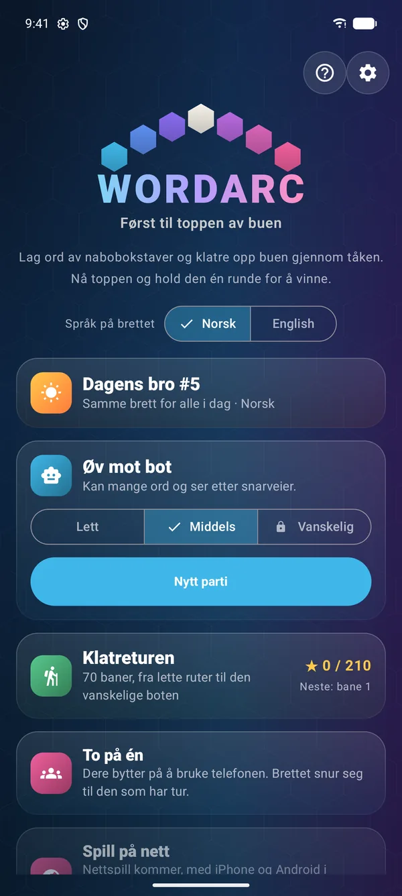
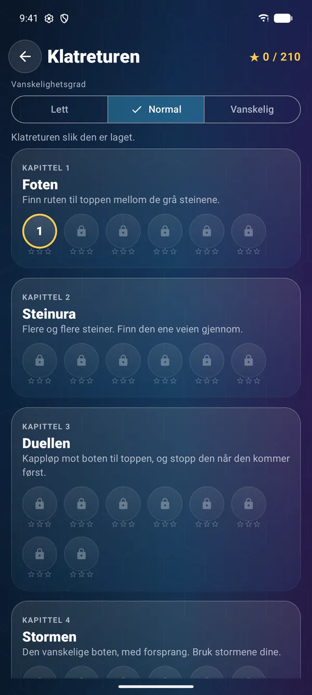
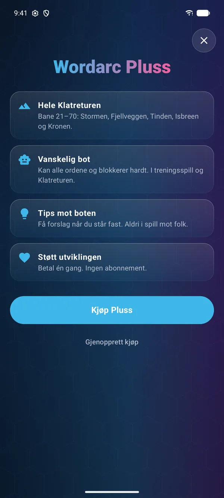

Bygg broen
med ord
Et ordspill for to. Lag ord av nabobokstaver, klatre opp buen gjennom tåken og nå toppen før motstanderen.
▶ Kommer snart på Google PlayGratis, uten reklame · For Android 7 og nyere · Spill på norsk eller engelsk · Bruker du iPhone?





Slik spiller du
Lært på et minutt. Vanskelig å legge fra seg.
Mange måter å spille på
Kappløp mot boten, ta dagens brett eller klatre alene.
Dagens bro
Samme brett for alle, hver dag. Nå toppen på færrest mulig trekk.
Klatreturen
70 håndlagde baner i åtte kapitler, de første 20 gratis. Finn veien mellom steinene, kappløp mot boten og knus broen dens. Opptil tre stjerner på hver.
Øv mot boten
Tre nivåer, fra vennlig til knallhard. Lett og middels er gratis.
To på én
To spillere, én telefon. Brettet snur seg til den som har tur.
På nett – kommer
Nettspill er på vei, med iPhone- og Android-spillere i samme kamper.
Norsk og engelsk
Velg brettspråk for hvert spill, uavhengig av appspråket. Store ordlister på begge.
Wordarc Pluss
Wordarc er gratis og uten reklame, både i gratisversjonen og med Pluss. Liker du det, låser Pluss opp resten av spillet for én enkelt betaling.
Gratis
- Dagens bro hver dag
- De første 20 banene i Klatreturen
- Øving mot lett og middels bot
- Ett gratis tips i hvert spill mot boten
- To på én og opplæringen
Pluss
- Hele Klatreturen (bane 21–70)
- Vanskelig bot (øving og Klatreturen)
- Ubegrensede tips mot boten (aldri mot folk)
- Støtt et lite, uavhengig spill